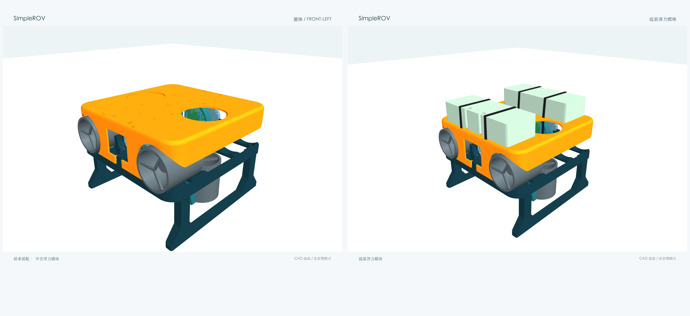

浮力模块与配平
标准装配不安装顶部浮材和绑带，底架与上罩保留相应通道。是否增加浮材，取决于装齐电池、控制器、电调、相机主机、线束及穿舱件后的真实重量和排水量。

两种装配
| 配置 |
外包尺寸，长×宽×高 |
浮材 |
绑带 |
默认 base |
213×210×148 mm |
0 |
0 |
选装 with-buoyancy |
213×210×184.7 mm |
2块 |
4条 |
尺寸不包括最终线缆、接头、系缆头和配重。两种配置使用同一套10个主体打印件；选装模块是独立采购材料，不和上罩一体打印。
什么时候需要浮材
完整机体在完全浸没状态下，重力由全部真实零件质量决定，浮力由实际排水体积决定。自由进水的外罩内部空间不能当作密闭排水体积。
- 净浮力不足时，需要增加适合目标水深的闭孔浮材，或调整其他部件。
- 前后倾斜或左右不平时，应调整质量和浮力的分布，避免长期依靠推进器抵消静态配平问题。
- 浮材过多时，下潜需要更大的持续向下推力，也会增加体积与阻力。
默认不安装是项目的基础装配配置，不是“裸机已经能断推上浮”的结论。首次下水前必须检查实际浮态和断推行为。
现有可选模块
参考形状为前后各一块62×160×35mm闭孔材料，中心X=±69mm。四条纵向绑带经过底架和上罩预留槽固定；工具让位口保留螺钉拆装路径。具体方法见装配说明。
两块长方体毛坯总体积约0.694 L；实际切口、材料密度及吸水/压缩性能会影响净浮力，不能把毛坯体积直接当作可承载重量。材料型号与适用水深仍需选定。
近似计算可用：净浮力 = (水密度 - 浮材密度) × 实际体积 × 重力加速度。最终以真实装配、排水量和水中测量为准。
BOM与文件
BOM_PURCHASED.csv把浮材和绑带的默认数量列为0，并单独列出选装数量。默认总装为standard STEP，选装总装为buoyancy STEP。
仿真注意事项
ROV(configuration="base")或--configuration base为默认；with-buoyancy加载浮材外观和对应碰撞体。
当前质量、惯量、重心、浮心、排水量和阻力均为显式示例参数，并不从CAD材料自动计算。因此，两种装配的演示不能证明浮材增加了多少净浮力，也不能据此预测真实机器的断推姿态。实物称重与配平后，应更新simulation/mujoco/config.json再进行控制性能比较。